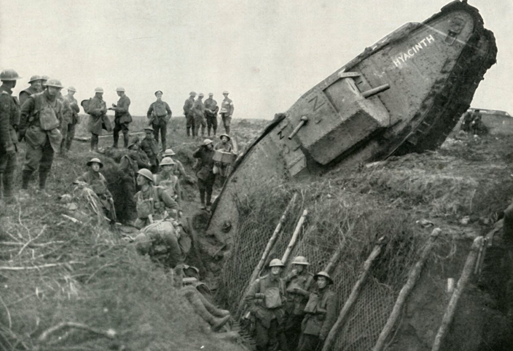

Erster Weltkrieg
Til Riley & King Justin
1. Verlauf & Die Westfront

Abbildung: Der starre Verlauf der Westfront (Stellungskrieg).
Der Krieg nahm seinen Anfang 1914 unter der strategischen Grundlage des Schlieffen-Plans. Das Ziel war ein schneller Sieg gegen Frankreich durch die Verletzung der belgischen Neutralität, um einen Zweifrontenkrieg zu vermeiden. Nach der Schlacht an der Marne scheiterte dieses Vorhaben jedoch, was zum Übergang in einen statischen Stellungskrieg führte.
- Etablierung eines über 700 km langen Grabensystems von der Schweizer Grenze bis zur Nordsee.
- Arthur Ruhl (1915) beschrieb die psychologische Zermürbung durch permanente Artillerieeinschläge.
- In Materialschlachten wie Verdun wurde Menschenleben gegen minimale Geländegewinne aufgerechnet.
- Die Defensive erwies sich aufgrund von Maschinengewehren und Stacheldraht als nahezu unüberwindbar.
2. Industrialisierter Krieg

Die Technisierung des Todes: Ein britischer Mark IV Panzer.
Der Erste Weltkrieg markiert die Geburtsstunde der modernen Materialschlacht. Der Erfolg hing maßgeblich von der industriellen Kapazität der Nationalstaaten ab. Der Soldat wurde zum bloßen Rädchen in einer technisierten Vernichtungsmaschinerie degradiert.
- Einsatz von Giftgas ab 1915 (Ypern) zur psychologischen und physischen Bekämpfung des Gegners.
- Die Artillerie verursachte durch massives „Trommelfeuer“ etwa 75 % aller Verluste.
- Britische Panzer (Tanks) sollten die Pattsituation des Stellungskrieges mechanisch durchbrechen.
- Ausdehnung des Krieges in die Luft (Zeppeline/Bomber) und unter Wasser (U-Boot-Krieg).
3. Heimatfront & Mobilisierung

Die Heimatfront bildete das logistische Rückgrat der Kriegsführung. Ohne die totale Mobilisierung der Zivilbevölkerung und der Industrie war ein industrialisierter Krieg nicht aufrechtzuerhalten. Dies führte zu einer tiefgreifenden staatlichen Kontrolle aller Lebensbereiche.
- Hindenburg-Programm (1916): Radikale Umstellung der gesamten Wirtschaft auf Rüstungsproduktion.
- Extremer Ressourcenmangel und Hunger im „Steckrübenwinter“ 1916/17 durch die britische Seeblockade.
- Januarstreik 1918: Über eine Million Arbeiter demonstrierten für „Frieden und Brot“ sowie Demokratisierung.
- Transformation Deutschlands in eine faktische Militärdiktatur unter der OHL (Hindenburg/Ludendorff).
4. Frauenrollen: Emanzipation durch Not?
Frauen füllten die Lücken, die durch die Mobilisierung von Millionen Männern in der Industrie entstanden. Dennoch war ihre Rolle im Krieg von Widersprüchen geprägt.
- Übernahme männlich dominierter Berufe in der Rüstungsindustrie und im Transportwesen.
- Einführung des Frauenwahlrechts (1918) als politische Anerkennung der erbrachten Leistungen.
- Trotz Schwerstarbeit blieben die Löhne der Frauen deutlich unter dem Niveau der Männer.
- Nach 1918 erfolgte oft die Verdrängung aus den Jobs zugunsten heimkehrender Soldaten.
5. Massenmedien & Propaganda

Propaganda entwickelte sich zur „vierten Waffe“. Durch gezielte Beeinflussung der Massenmedien wurde das eigene Handeln gerechtfertigt und der Gegner systematisch entmenschlicht.
- Schaffung radikaler Feindbilder (z. B. Darstellung der Deutschen als brutale „Hunnen“ oder Bestien).
- Zensur von Feldpostkarten zur Aufrechterhaltung der Moral an der Heimatfront.
- Mobilisierung finanzieller Mittel durch die Bewerbung von Kriegsanleihen.
- Emotionale Instrumentalisierung von Gräueltaten zur Rekrutierung von Freiwilligen.
6. Das Epochenjahr 1917 & Das Ende
Das Jahr 1917 gilt als globale Zäsur, in der die alte europäische Ordnung zusammenbrach und der Aufstieg der Weltmächte begann.
- Kriegseintritt der USA: Woodrow Wilson erklärte den Kampf für die Demokratie („Make the world safe for democracy“).
- Russische Revolution: Die Machtergreifung der Bolschewiki (Oktoberrevolution) führte zum Separatfrieden von Brest-Litowsk.
- Wirtschaftliche Erschöpfung Deutschlands führte 1918 zum militärischen Zusammenbruch.
- Die Dolchstoßlegende: Versuch der OHL, die Schuld an der Niederlage der demokratischen Opposition zuzuschreiben.